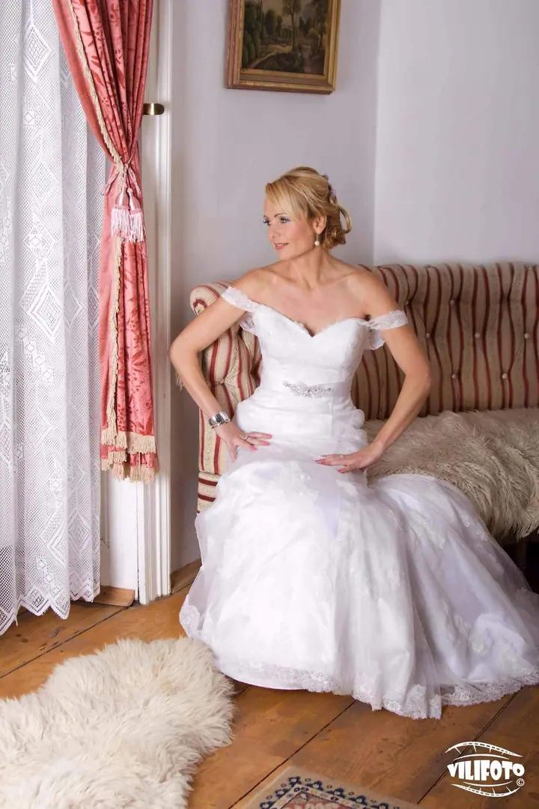
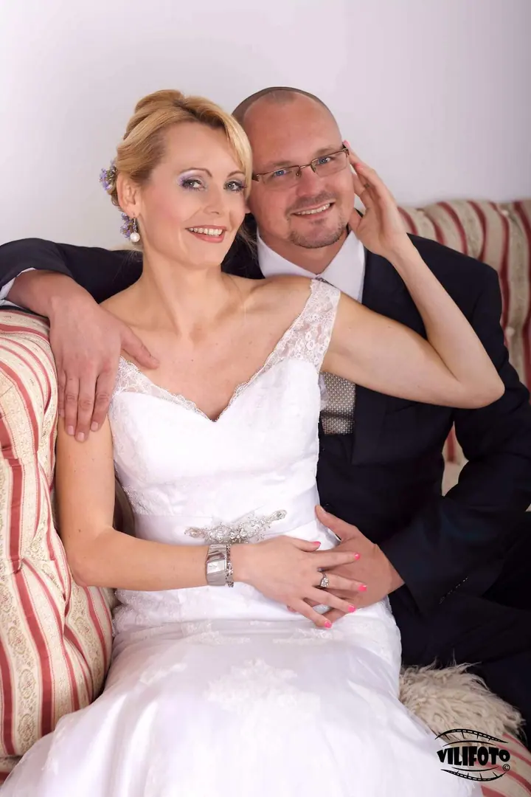
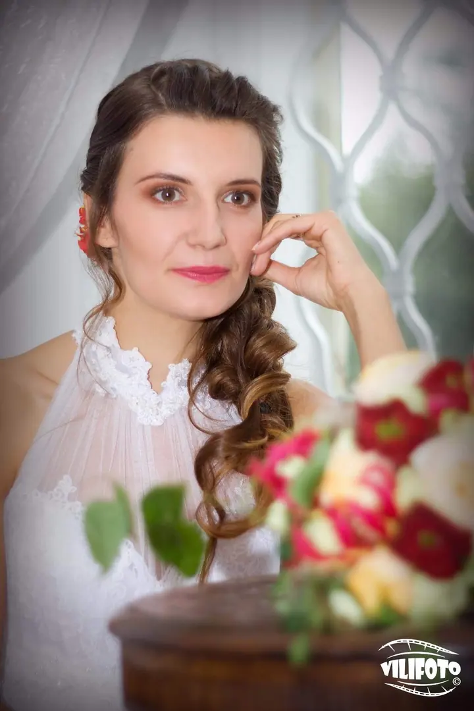
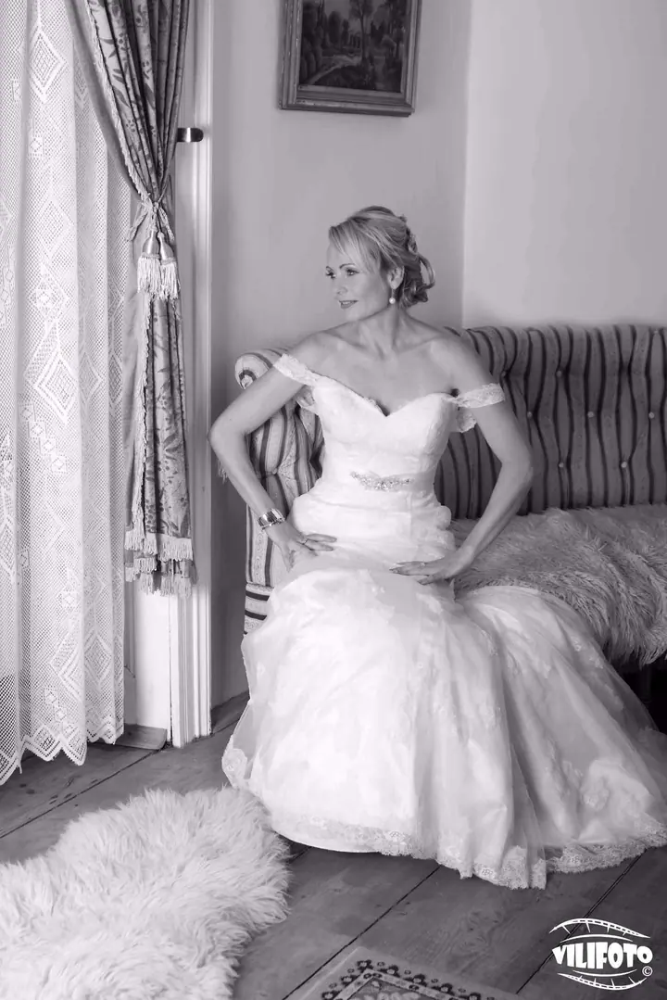
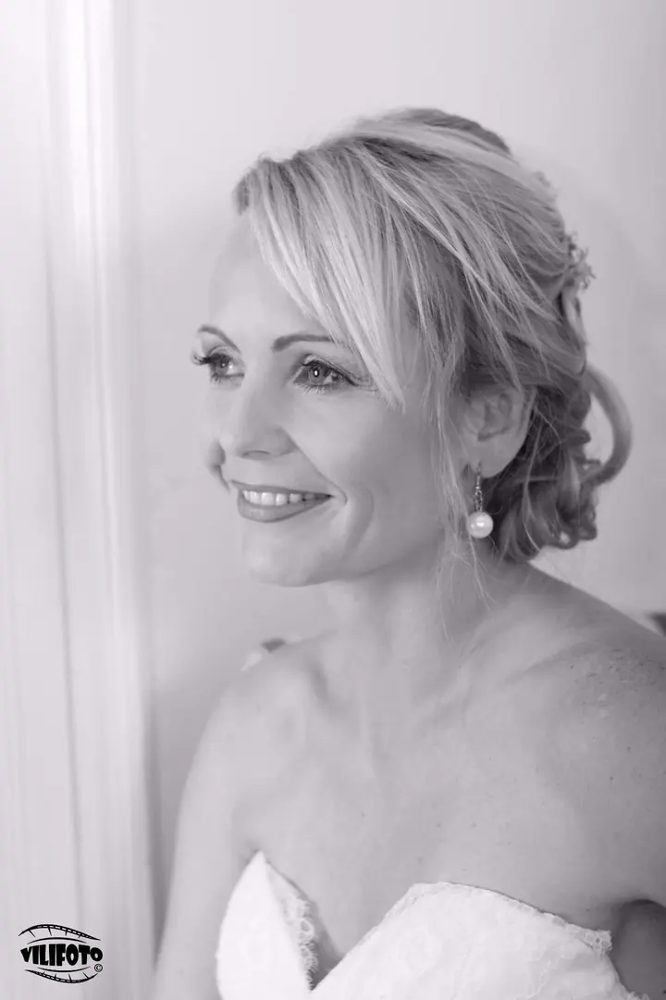
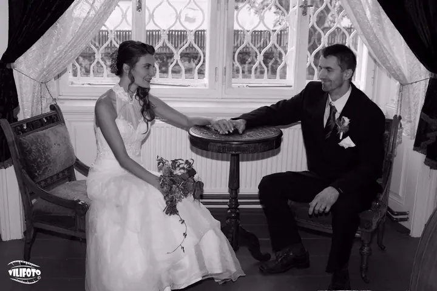

Svatební fotografie
Podle vašich představ nafotím celý svatební den, nebo jen to důležité. Nemám balíčky podle hodin, cena se odvíjí od počtu upravených fotografií.





Jmenuji se Aleš Velich, pro většinu lidí Vilík, a nejradši fotím lidi. Proto se věnuji hlavně svatbám a portrétům ve svém ateliéru v Havlíčkově Brodě. Kromě toho fotím produkty a firmy a pomáhám s jejich reklamou.
Více o mně
„Pro mě je fotografie umění pozorování.“
— Aleš Velich
Podle vašich představ nafotím celý svatební den, nebo jen to důležité. Nemám balíčky podle hodin, cena se odvíjí od počtu upravených fotografií.
Portréty, rodinné fotky, děti i glamour fotím ve vlastním ateliéru v Havlíčkově Brodě. Mám tam zábleskové i trvalé světlo a spoustu rekvizit, šatů a doplňků.
Fotím výrobky, interiéry i exteriéry firem. Každý nový materiál je pro mě výzva, třeba takové sklo. Pořád platí, že dobrá fotka prodává.
Spolupracuji s Googlem na projektu Street View. Vaší provozovně připravím virtuální prohlídku včetně zveřejnění v mapách Google.
První digitální zrcadlovku jsem si koupil v roce 2011 a skoro hned jsem se přihlásil na kurz digitální fotografie. Focení mě chytlo a nejvíc mě bavili lidé, a tak jsem začal s portréty v ateliéru v Havlíčkově Brodě. Vybavil jsem ho zábleskovými i trvalými světly a spoustou rekvizit, šatů a doplňků.
Postupně jsem přidal virtuální prohlídky Google Street View, grafiku a tisk, aby u mě firmy vyřešily propagaci na jednom místě. Na svatbách působím také se svatební agenturou Svatba Vysočina a fotím po celé republice i v zahraničí.
Ve volném čase pořádám tématické fotoakce, díky kterým znám šikovné modelky, vizážisty, hairstylisty i pěkná místa k focení. Klidně se na mě obraťte s čímkoli, a kdybych náhodou něco neuměl, doporučím vám někoho, kdo to umí.
Ozvěte se mi telefonicky nebo e-mailem. Volné termíny je nejlepší zamluvit po telefonu, u svatby ideálně s dostatečným předstihem.
Probereme vaši představu, klidně při osobním setkání. Podle toho vám připravím přesnou nabídku, cena se odvíjí od počtu upravených fotografií.
Fotíme v mém ateliéru plném rekvizit, na svatbě nebo přímo u vás ve firmě. Na svatbě můžu být celý den, nebo jen u toho nejdůležitějšího.
Fotky pečlivě upravím a předám vám je v barevné i černobílé verzi na flash disku nebo CD. Když budete chtít, zajistím i tisk.
Portrétní focení (rodina, děti, novorozenci) vyjde na 1 500 Kč za 10 retušovaných fotografií v plné kvalitě. Svatby fotím od 5 000 Kč, produkty od 100 Kč podle náročnosti zadání.
Standardně zhruba 80 upravených fotografií a kolem 150 momentek se základní úpravou. Všechny dostanete barevně i černobíle.
Ano, svatby fotím po celé republice a také v zahraničí.
Rád. Spolupracuji s řadou profesionálů, doporučím vám hairstyling i vizáž a zajistím také kameramana, včetně leteckých záběrů.
alesvelich@seznam.cz
+420 734 128 156
Havlíčkův Brod · Vysočina · celá republika i zahraničí